Госпитальная Шкала Тревоги и Депрессии (HADS)
Тест состоит из двух частей.
В первой части, состоящей из семи вопросов, Вам необходимо ответить на семь вопросов, которые помогут определить у Вас наличие уровня Тревоги.
Вторая часть теста также состоит из семи вопросов, которые, в свою очередь, дают понимание того, присутсвуют ли у Вас признаки депрессии. Каждому утверждению соответствуют 4 варианта ответа.
Выберите тот из ответов, который соответствует Вашему состоянию.